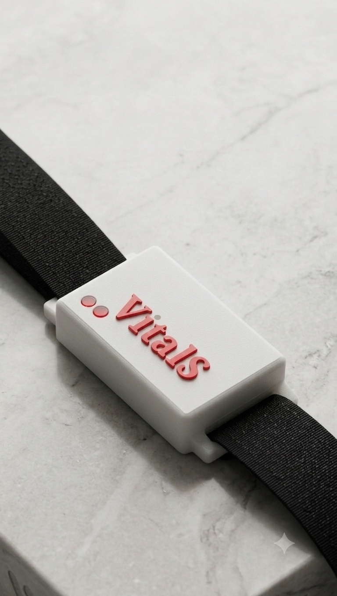

An Edge AI wearable and smart bedsheet system that continuously monitors bedridden patients and flags pressure ulcer risk in real time no cloud dependency, no guesswork.
Pressure ulcers (bedsores) are one of healthcare's most common, costly, and preventable complications yet prevention still relies on manual repositioning schedules and caregiver vigilance.
Sensing happens on the body and the bed. All AI inference happens locally, on-device no cloud round-trip, no latency, no privacy compromise.

Worn at the waist. Continuously tracks patient posture and acts as the system's brain — running all Edge AI inference locally with no cloud dependency.
The Signal Flow From Posture to Risk Score
All risk inference runs locally on the EFR32xG26's AI accelerator. No internet needed, no cloud costs, no latency data never leaves the device.
The Smart Belt's IMU continuously detects whether the patient is on their left side, supine, or right triggering pressure checks only when needed.
Four repositionable FSR plates map pressure distribution, weight concentration, and micro-movement across the bed surface with granular precision.
Low / Medium / High risk scores are pushed instantly to the mobile app or hospital dashboard flagging high-risk patients before damage begins.
Designed for family caregivers managing a bedridden patient at home. Simple installation, affordable price point, and a mobile-first experience.
Centralized multi-bed monitoring for small hospitals. High-risk patients are automatically surfaced no expensive proprietary infrastructure required.
Live update of risk on app

This section will be updated with prototype photos, architecture diagrams, a demo video, and validated metrics once testing is complete.
Firmware, embedded software, hardware, and machine learning VitalSense is a full-stack hardware + AI effort built from the ground up.
Investors, hospital administrators, and distribution partners reach out to learn more about our technology and roadmap.